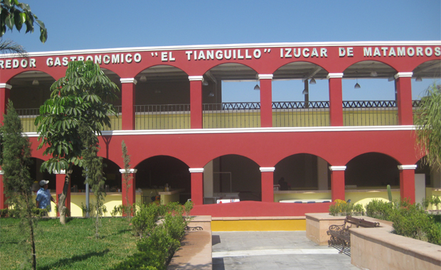

VARIEDADES
CORREDOR TURÍSTICO "EL TIANGUILLO"

Este corredor le ofrece: el tradicional mole poblano, el pozole estilo Matamoros, tlaxcales, pan barrieco, enjocado (pollo con jocoque y chile guajillo), pipián verde hecho con pepita de calabaza y tlanilpa, tamales de frijol, pozole. También podrá degustar dulces típicos como
alegrías, palanquetas, jamoncillo de pepita,
conservas de mango, dulce de calabaza,
cacahuate garapiñado, pepita garapiñada y obleas de pepitas de calabaza con caramelo. No olvide disfrutar: Tacos de Cecina Tostadas Gelatinas Barbacoa
IR A INICIO